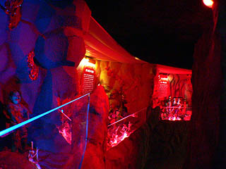
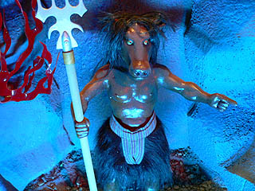
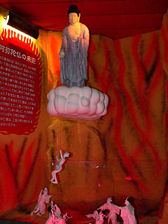
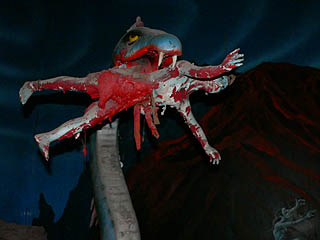
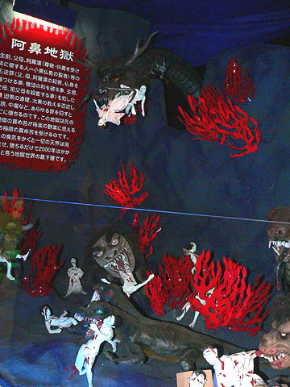
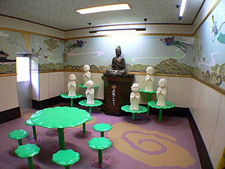

正観寺；その2
いきなり真っ暗になった地獄巡り。もしかしてこれもまた地獄アトラクションのひとつか？
と若干期待したのだが・・・どうやら、電源が完全に落ちたらしい。
無気味な照明とサウンドが完全に消えた地獄。ある意味電源が入っている時よりも恐かったです。
慌てて真っ暗な通路を戻り入口の受付のおばちゃんに電源が落ちた由を伝えると
「え〜、あんた達まだいたの！？」と言われちゃいました・・・
まあ、確かに普通の人なら10分でスルーしてしまうかもしれないが、こちとら曲がりなりにも立体電動地獄愛好家、一個一個の責め苦を丹念に見て撮影してモノによっては動画も撮ったりと、色々と大変なんですよお〜。
すっごく面倒臭そうなおばちゃんになるべく低姿勢で再び電源を入れてもらい再び地獄に戻る。
え〜っと。どこまでだったかな。
あ、そうそうこの辺からだ。

等身大の鬼が責めまくる地獄風景を過ぎると今度は小さなミニチュアっぽい地獄ジオラマが続く。
この八大地獄自体が作られたのは30年近く前なのだが、あまりにも恐くてすぐに出ていってしまう人が続出したので（そりゃそうだ）、説明をきっちり読んでもらうために今までの血飛沫地獄部分を一部壊してこのミニチュア系地獄を去年リニューアルしたそうだ（「動物園、Ｂ級SPOT大好き！」の荒川さんのお話による）。
先程までの血飛沫飛び散りまくりの光景に比べてどちらかというとややスッキリした印象。
グロい見世物的な要素よりも地獄の正確な説明と描写に力点を置いているのだろう。
とはいってもこんな感じなんですけど。
まあ、確かに説明はきっちりされてますけど、やっぱり地獄の責め苦の方に目が釘付け。
奪衣婆の上では洗濯係の鬼さんが着物を干してました。
閻魔様を中心に十王が揃い踏み。
閻魔様の両脇には人頭杖（生首が乗っているヤツ）業の秤なども完備している。
勿論、浄玻璃の鏡だってホラこの通り。ああ〜、決定的瞬間が映っちゃってますねえ〜。等活地獄以上は確定ですなあ。
地獄の番人、馬頭（めず）。え〜と確か牛頭（ごず）と二人で地獄の鬼を仕切ってるんでしたっけ？

ややソフトになりながらもやっぱり血飛沫ワールド。
よっぽど好きなんでしょう。 この辺の残虐性をリアルに表現する造型センスに感服つかまつりました。
海外の立体地獄と比較すると例えば台湾の地獄は電動細工の精緻さや地獄なのに妙なエレガントさがあったりする。
また、タイの地獄などはもっとグロいのだがどこか笑いを誘うユーモラスさがあった。
しかしここの地獄はエレガントさ、ユーモラスさなど微塵もなくひたすらリアリズムに徹した恐さを追求しているように思える。
そういう意味で世界的にもかなり恐い地獄の部類に入るだろう。
地獄の火炎車！カクカク動きます。
阿弥陀仏が来迎して蜘蛛の糸で救ってくれる事もあったりなかったり。

そして最後に大作2題。これはリニューアル以前からあるモノ。
再び水色の亡者が登場し、文字通り出血大サービス。
恐竜とか出て来ちゃってますもん。
中でも強烈なのが人面犬。
身体がダルメシアンというのも凄いがその顔ったら。
フラッシュ焚いても焚かなくてもこんなですから。身体が犬とかそういう事を超越してひたすら恐かったです。

そしていよいよ最後の阿鼻地獄。まさに阿鼻叫喚の世界。
ここは地獄界でも最も悪い事をした者が落ちるという最悪の地獄。
龍にくわえられ訳の判らん怪獣に振り回される理不尽世界。
確かに燃やされるとか刺されるとかといった具体的な痛みが想像出来ないだけにイヤ〜な恐怖感が募る。

あまりのキテレツぶりに感動していると、突然後ろからおばちゃんが登場。
「あんた達、いい加減に出て頂戴！！」
ああ〜、いい年して怒られる私とへりおす氏。
地獄の奪衣婆よりはるかに恐かったです。
考えてみたらこんなところで大の大人2人がやれビデオだカメラだと振り回していつまでも地獄を見てたら怪しく思うだろうな。
でも凄く面白かったんだよ〜。勘弁してくれよお〜。ホントはあと1時間は見たかったんだよお〜！！！
まあ、あばちゃんの奪衣婆プレイや消灯地獄も込みのてんやわんやの地獄体験っつー事で、若干の消化不良感は残ったがそれはそれで面白かった。
（後日談；荒川さんがこの八大地獄を訪れた時には男性の方に丁寧に案内されたそうです。）

最後にはおざなりな極楽コーナーが。これもまた地獄界のお約束。
リアル奪衣婆に追い立てられるように地獄を出た。
しかしこの寺の見どころはこの地獄だけではなかったのだ・・・
↓続きはこちらへ↓
正観寺；その3に続く
珍寺大道場 HOME